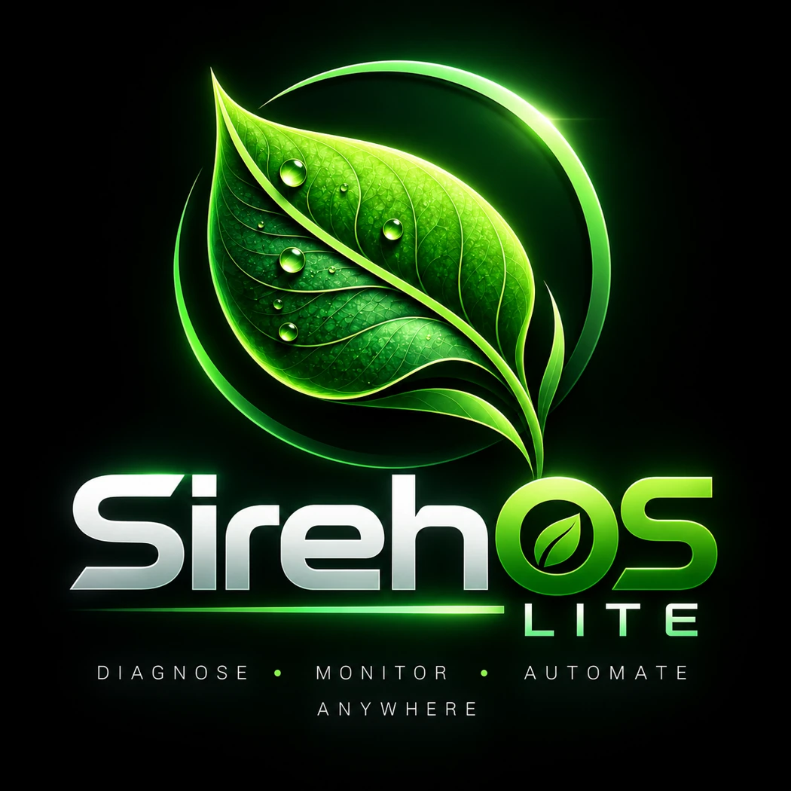

System health at a glance
Collect consistent diagnostics across CPU, memory, storage, network and essential services.

Independent open-source project · Pre-alphaSirehOS Lite is a planned lightweight, Ubuntu-based live Linux environment for practical infrastructure diagnostics, troubleshooting and evidence collection.
SirehOS Lite aims to bring essential diagnostics, system visibility and repeatable troubleshooting workflows into one USB-bootable environment. Designed for infrastructure engineers and curious technologists, with a CLI-first approach and an optional lightweight desktop.
The long-term goal is to build reusable, transparent tooling that works without mandatory cloud services or background agents.
These are proposed features, not yet available software.
Collect consistent diagnostics across CPU, memory, storage, network and essential services.
Capture snapshots and highlight meaningful infrastructure changes during troubleshooting.
Produce readable HTML and structured JSON reports, with privacy-conscious handling of sensitive data.